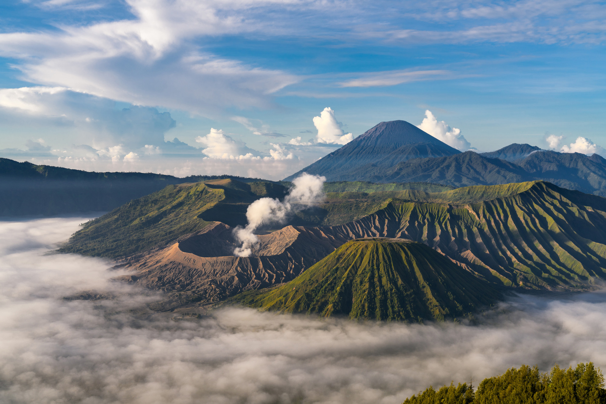
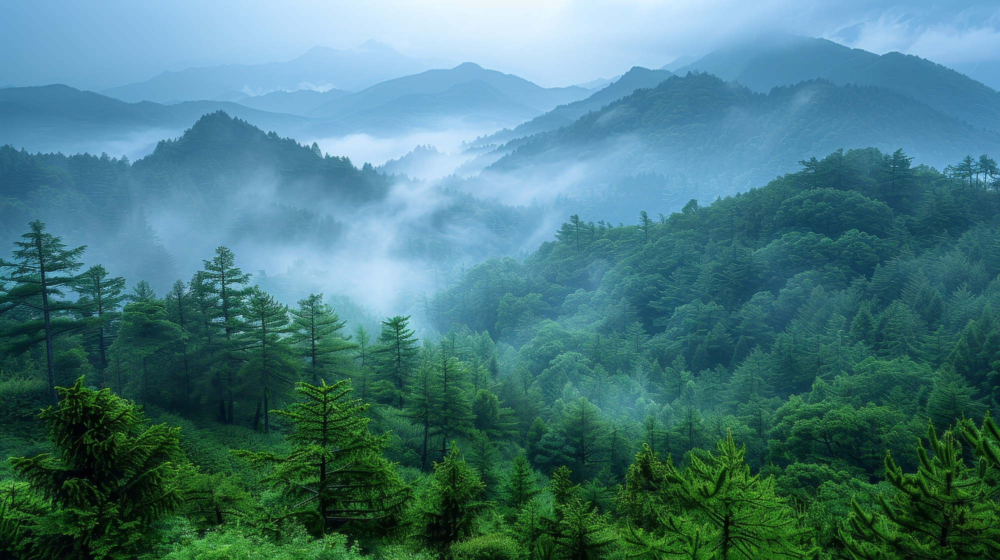
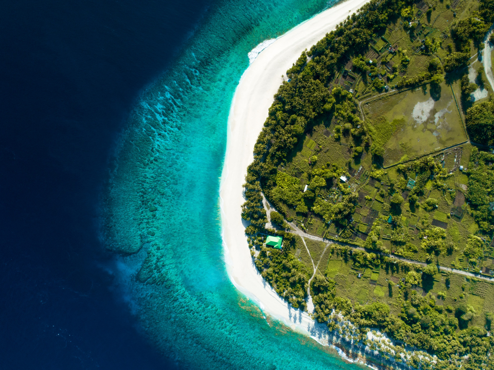

Nikmati keindahan alam Indonesia yang tiada duanya. Temukan destinasi wisata
terbaik dari sabang sampai Merauke dan rasakan pengalaman tak terlupakan.
Di bawah ini adalah beberapa destinasi populer yang menawarkan pengalaman tak terlupakan di tengah keindahan alamnya.
Kami menyediakan berbagai paket perjalanan yang dapat anda pilih.
Pilih destinasi, durasi, aktivitas, dan penginapan sesuai keinginanmu. Liburan fleksibel dan nyaman sesuai budget.
Nikmati perjalanan yang aman dan informatif bersama tour guide berpengalaman yang siap menemani kamu menjelajah.
Kami bantu kamu urus pemesanan transport dan penginapan terbaik, dari pilihan hemat sampai premium.
Abadikan momen liburan dengan foto dan video profesional, biar kamu tinggal menikmati perjalanan tanpa mikirin kamera.
Hubungi kami untuk informasi lebih lanjut, konsultasi perjalanan, atau pemesanan paket wisata yang sesuai dengan gaya liburan kamu.